Análise conformacional
Prof. Euzébio Guimarães – DFAR – BioME - UFRN
Introdução
Análise conformacional é a busca por todas as posições energeticamente acessíveis para uma determinada molécula. Nos anos 70, 80 e 90 eram muito comuns publicações contendo estudos minuciosos sobre conformações de moléculas. Atualmente, este tipo de estudo é feito, mas não é o alvo principal abordado em uma pesquisa. Contudo, é uma fase vital para adquirir uma conformação realística.
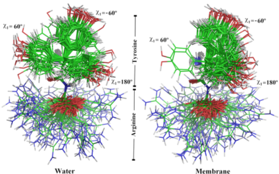
Em todo estudo que fizeres, principalmente se a molécula de interesse tiver várias ligações que giram, é essencial realizar uma extensiva análise conformacional. Além disso, a conformação de energia mínima no solvente pode ser diferente da encontrada dentro de um receptor, então é importante encontrar o maior número de conformações possível e obter a energia relativa de cada uma. Com o método PM7 que já usamos podemos obter esse dado com grande facilidade. O difícil na verdade é amostrar as conformações.
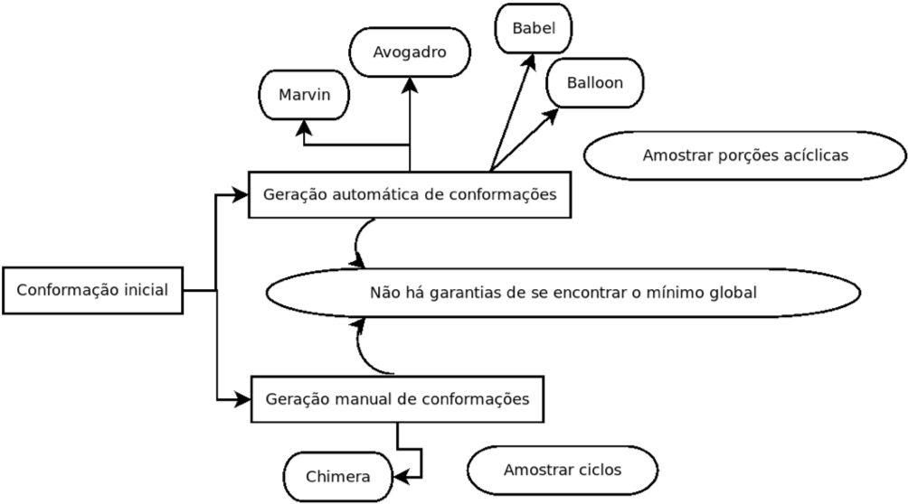
A melhor maneira de se criar conformações para sua molécula é a forma automática. Pode ser feito com os programas Marvin ou Avogadro, mas interfaces gráficas apenas tornam o processo mais demorado.
Tutorial 5
Gerando conformações com Balloon
Vamos utilizar agora uma molécula maior que a Vitamina C para que o resultado seja mais interessante. A quiotorfina é mais interessante neste caso. Vamos obter várias conformações 3D a partir do SMILES do PubChem
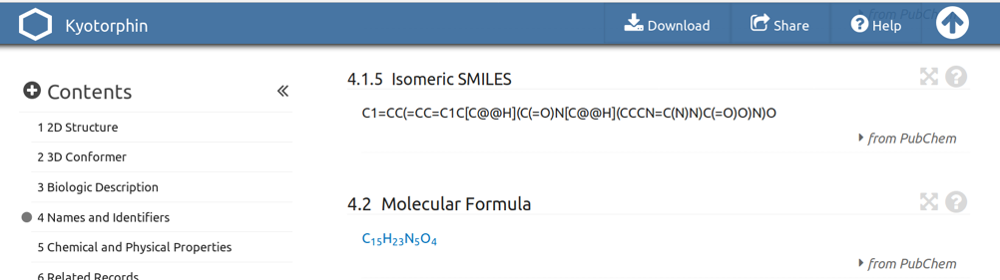
Salvar um arquivo kyo.smi como feito anteriormente.
gedit kyo.smi
Use o programa Marvin para gerar a protonação correta para a molécula. Repare que é bastante complexa a população de microespécies. Mas a conformação 5 (no caso da figura abaixo) foi a mais predominante no pH 7,00.
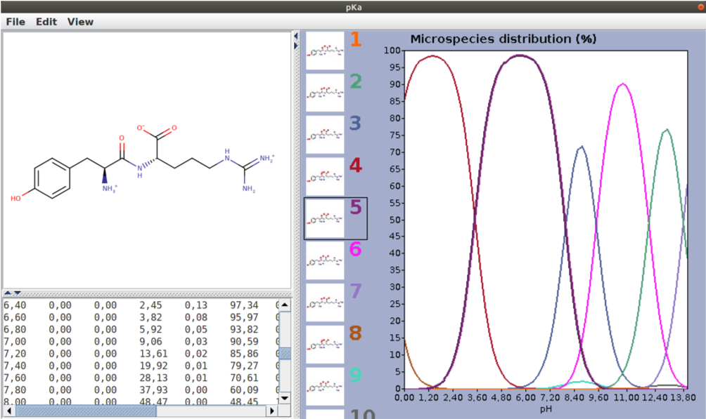
Agora você pode gerar várias conformações no próprio Marvin, mas iremos criar apenas uma e depois utilizar o Balloon para gerar outras.
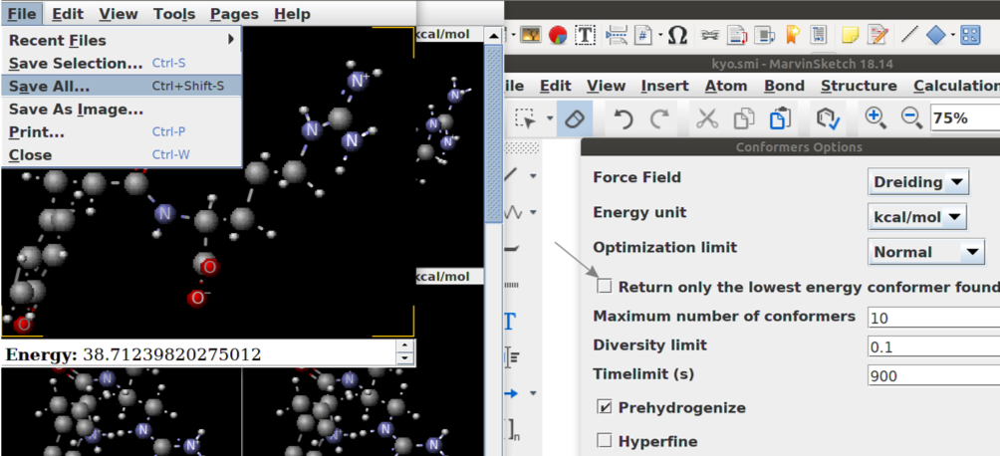
Salve como kyo_3D.mol (MDL molfile) e gere as conformações para o composto de maneira automática com o Balloon.
Digite:
export BALLOON_FORCEFIELD=/home/...
Lugar onde está o arquivo MMFF94.mff que veio com o Balloon.
e em seguida:
balloon --nconfs 20 --nGenerations 300 --rebuildGeometry kyo_3D.mol kyo_conformers.sdf
Com o comando acima serão geradas no mínimo 20 conformações utilizando uma busca via algoritmo genético. Repare na figura abaixo que são geradas diversas conformações para uma estrutura 3D única. Basta agora realizar uma otimização de geometria para cada uma utilizando PM7. Para isso seus conhecimentos de shell script serão necessários. Ao obter a energia para cada conformação pondere-as por uma distribuição de Boltzman para obter a porcentagem de existência de cada conformação em uma determinada temperatura.
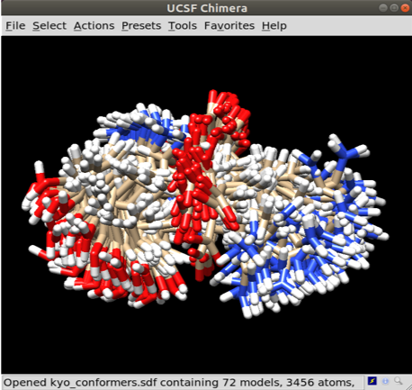
Tutorial 6
Gerando conformações de forma manual
Quando a molécula tem ciclos muito grandes (7 átomos ou mais) os algoritmos de geração de conformações não conseguem amostrar bem estas porções. Tomamos como exemplo a molécula abaixo. Podemos gerar no mínimo 3 confomações de baixa energia.
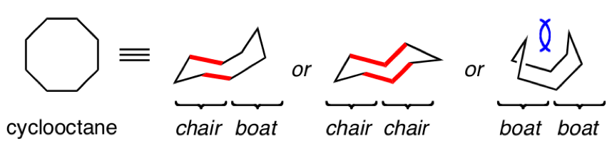
O SMILE do ciclooctano é C1CCCCCCC1. Vamos gerar a estrutura 3D no UCSF Chimera e tentar criar tais conformações manualmente.
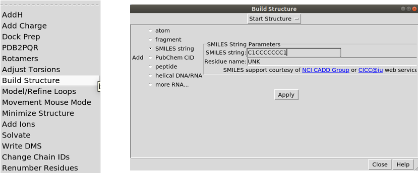
Será criada automaticamente uma conformação aleatória.
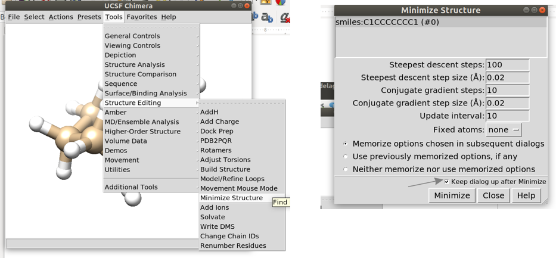
Agora utilize o UCSF Chimera para otimizar a molécula com o campo de força implementado no próprio software. Otimizações sucessivas juntamente com a movimentação de átomos selecionados gera uma nova conformação.
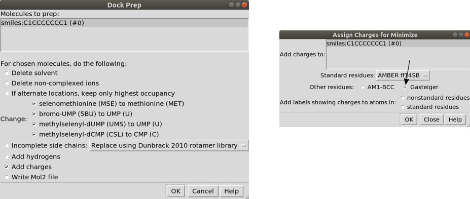
Vamos usar a ferramenta de mouse movement para mover os átomos indicados na figura abaixo.
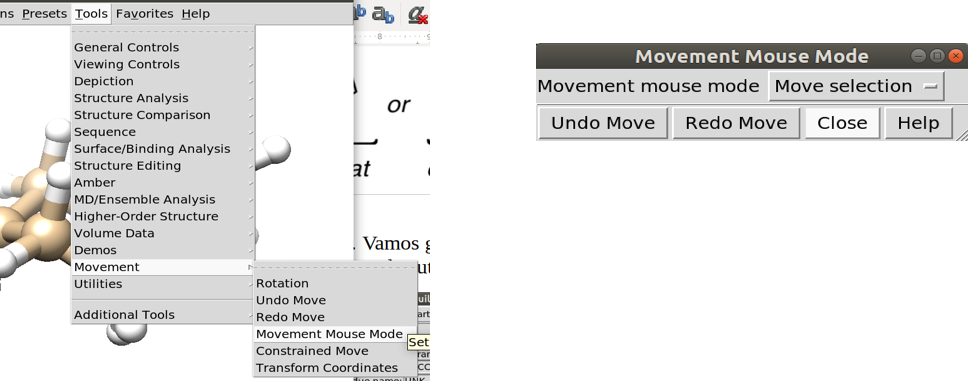
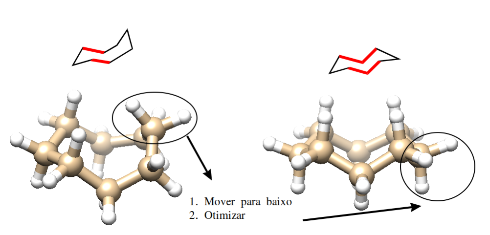
Agora você precisa ser habilidoso para mover os átomos apontados otimizar a molécula para uma nova conformação. Segure a tecla Ctrl e selecione um átomo, depois segure Shift juntamente com Ctrl e selecione outros átomos. Com o botão do thumbwheel (aquele do entre os dois botões do mouse) mova os átomos até a posição desejada. Otimize novamente. Com este método você será capaz de conseguir diversas conformações para os ciclos e otimizar com PM7 para saber a energia relativa.
Não se preocupe se esta parte ficou meio obscura, tutoriais futuros faremos os procedimentos de docking manual onde este procedimento é mostrado novamente.